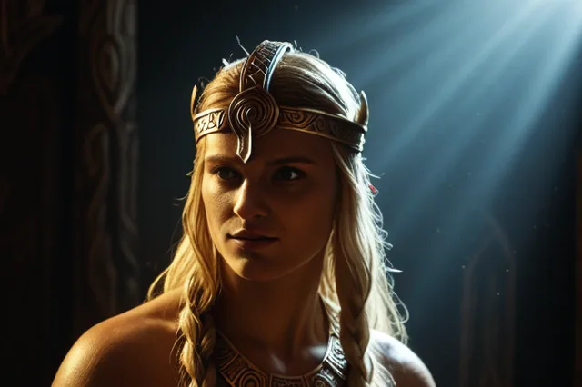

Соул
Соул (Sól) — богиня Солнца, преследуемая Сколлом
Sól
Сол ("Солнце") — богиня Солнца, дочь Мундильфари. Ездит по небу на колеснице, запряжённой конями Арвакомром и Альсвиддом. Её преследует волк Сколл, который в Рагнарёке догонит и проглотит Солнце.
Происхождение: Род Мундильфари
Германическое имя: Saulô
Роль: богиня Солнца
Семья
- Отец: Мундильфари
- Сестра: Мани (Луна)
Легенды
- Солнце управляет путями богов по небу
- Волк Сколл постоянно преследует Солнце
- В Рагнарёке Сколл проглотит Солнце
Источники
ᚱ